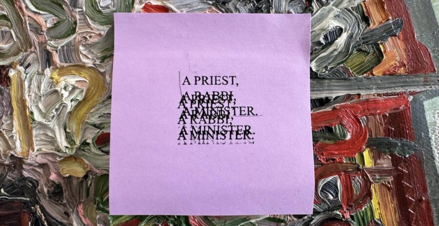

Mike Cloud & Nyeema Morgan: Story Structure, Pt. 2
Artist couple Mike Cloud and Nyeema Morgan deploy starkly divergent aesthetics. Cloud’s work is steeped in effusive symbolism, while Morgan’s tends toward minimalism. Indeed, it may seem hard to imagine their work being made in adjoining studios. Yet underneath these eye-catching formal differences, shared interests are at play, centered upon the politics of our social reality and cultural imagination. This exhibition will debut a mixed media installation continuing Morgan’s “Studies for Traps” series alongside Cloud’s signature multi-dimensional paintings. Their juxtaposition will be framed by a jointly produced sound work rooted in myths and memories of the many ways in which art and life blur into each other. Curated by Dieter Roelstraete.
ABOUT THE ARTISTS
Mike Cloud (b. 1974) is Associate Professor and Director of Graduate Studies in the Department of Art, Theory, and Practice at Northwestern University. Cloud’s artistic practice is situated within the expanded field of contemporary painting and image making. In his work he dissects photographic and painterly form, scrambling text and realigning content that produces new breaks in legibility and new understandings. Cloud examines painting as an object within a wider cultural system of objects, marks, symbols, motifs, and forms. His expressive technique blurs and blends elements into aesthetic compositions that interrogate the politics, contrivances, and language of painting and his complicity within its system of functions. Cloud’s solo exhibitions include Called Ahead (2024) at Fahrenheit Madrid, Spain; Tears in Abstraction (2019) and Bad Faith and Universal Technique (2014) at Thomas Erben Gallery, New York; The Myth of Education (2018) at the Logan Center for the Arts in Chicago; and Special Projects: Mike Cloud (2005), MoMA PS1, New York. He is the recipient of a Guggenheim Fellowship and the Rome Prize.
Nyeema Morgan (b. 1977) is an interdisciplinary artist whose works raise questions about articulations and constructions of power in everyday cultural material such as recipes, jokes, fables, and canonical art works. Her solo and two-person shows include The Set-Up (2022) at PATRON, Chicago; Soft Power. Hard Margins. at table, Chicago; horror horror (2018) at Grant Wahlquist Gallery, Portland, ME; Like It Is (2021) at the Philadelphia Art Alliance, Philadelphia; Asians Smaisians and Other Abstract Racial Slurs (2019) at Marlborough Contemporary Project Space, NYC; and THE STEM. THE FLOWER. THE ROOT. THE SEED. (2020) at the Boulder Museum of Contemporary Art, Boulder, CO. Her group exhibitions include The Drawing Center, New York, NY; Hessel Museum of Art, Annandale-on-Hudson, NY; Galerie Jean Roche Dard, Paris, FR; and the Bowdoin College Museum of Art, Brunswick, ME. Morgan attended the Skowhegan School of Painting and Sculpture and studied at the Cooper School of Art and California College of the Arts. She is the recipient of fellowships and awards from Joan Mitchell Foundation, the Foundation for Contemporary Arts, and Art Matters Foundation. Morgan is an Assistant Professor of Sculpture at the School of the Art Institute of Chicago.